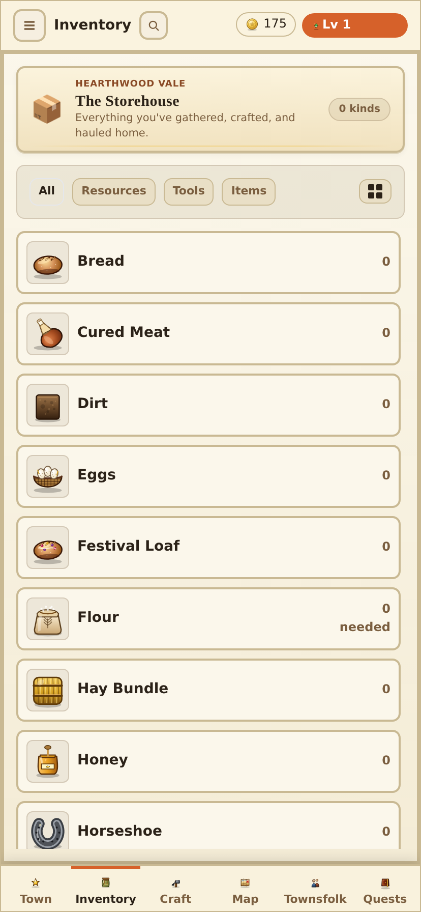
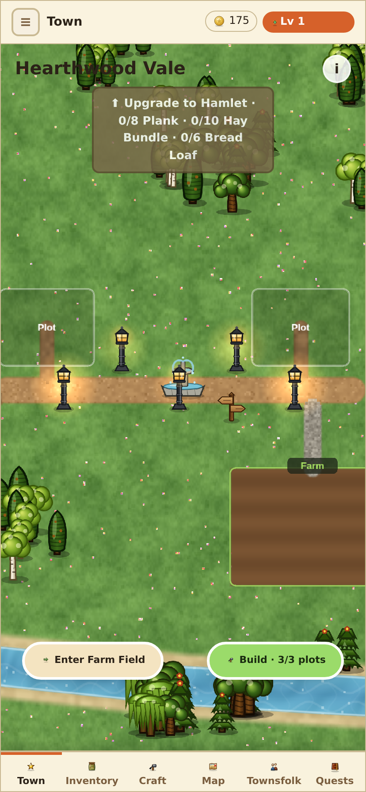
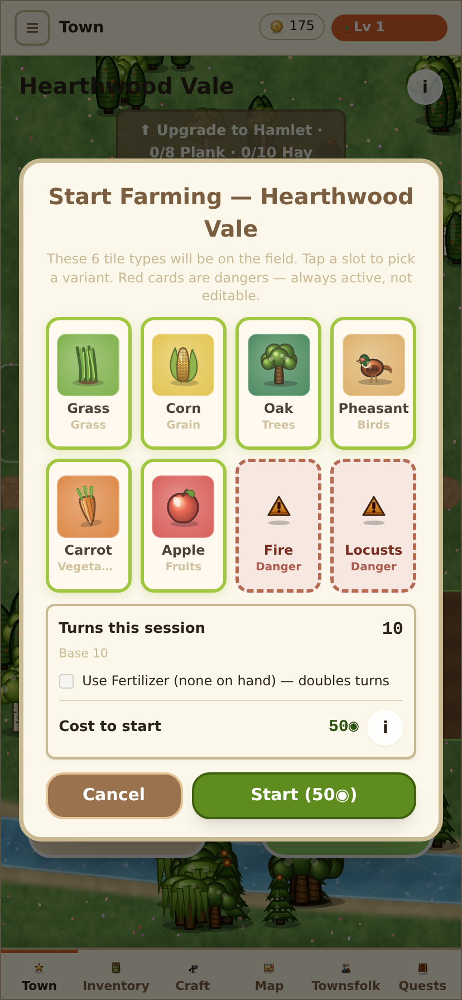
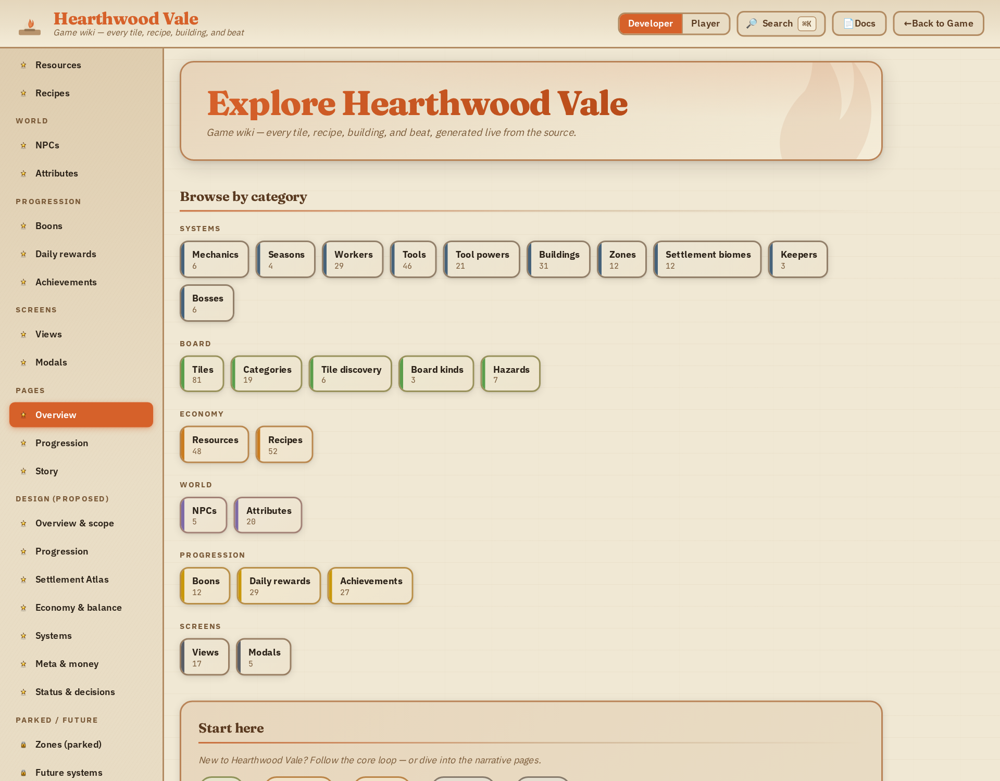

Design review · 2026-06-30
Read from the live code in src/ (not the reference/ docs),
with the running game and wiki screenshotted across every major screen and WCAG contrast measured on
the actual token values. The verdict, a revised palette, and a phased plan.
Your instinct is right, and it's specific.
The game is not hard to read — primary ink on parchment is a healthy 13.6:1. The problem is that every signal other than body text is too soft to do its job: borders, dividers, card edges, tertiary labels, the "current season" cue, and most accent colors all sit at or below 1.7:1, so the UI collapses into one flat parchment plane. There is no contrast ladder and effectively only two live accent colors (ember, gold). Several accent tokens are defined but dead.
The fix is not to go dark or loud. Keep the warm-parchment identity — it's cohesive and differentiates you. Rebuild three things: a real contrast ladder, a real accent system (and wire the dead tokens), and season & world legibility.
src/tokens.css was deliberately "lifted" out of an older dark-brown frame into an
all-parchment palette — the comments say so ("was a dark brown frame; now a soft cream border,"
"was saturated season fills"). That lift went one shade too far: the surfaces and the things meant
to separate them now sit on top of each other.
| Role | Value | On | Contrast | WCAG |
|---|---|---|---|---|
Panel / card border, divider --iron |
#c9b993 | #f6efe0 | 1.69 | ✗ FAIL |
Tertiary text --on-panel-faint — same hex as the border |
#c9b993 | #f6efe0 | 1.69 | ✗ invisible |
Gold as text --gold |
#e2b24a | #f6efe0 | 1.71 | ✗ (ok as fill) |
Ember accent --ember |
#d6612a | #f6efe0 | 3.27 | ⚠ large/UI only |
Moss accent --moss |
#6f8a3a | #f6efe0 | 3.41 | ⚠ large/UI only |
Section label --on-panel-label |
#8a4a26 | #f6efe0 | 5.94 | ✓ |
Secondary text --ink-soft |
#7a5e3f | #f6efe0 | 5.24 | ✓ |
Primary text --ink |
#2b2218 | #f6efe0 | 13.64 | ✓ |
In practice (see the Inventory below): cards have no edges (every row bordered at 1.7:1), "tertiary" text is literally the border color so it's unreadable, the three "surfaces" are nearly one surface, and the active filter chip barely registers. This is the whole "too soft" feeling, quantified — a separation problem, not a legibility one.

tokens.css defines a respectable set, but in the running game only ember and
gold read as alive. --moss, --indigo, --rose,
--slate are desaturated and appear as exceptions, not a system. And the biome accents are
defined but never used:
| Token | Value | Consumers in src/ |
|---|---|---|
--biome-farm | #7fa848 | 0 — DEAD |
--biome-mine | #6a7d92 | 0 — DEAD |
--biome-fish | #4a8aa8 | 0 — DEAD |
The board's biome color comes from season.look.fill instead. So a whole intended "each
domain has a color" system is wired to nothing. The only screens that feel colorful are the ones where the
color comes from the art — never the chrome:


The current season is core game state, and it's whispered. The four field gradients are
washed pastels — summer and winter are especially close — and the HUD season strip is drawn at ~33%
alpha (Hud.tsx:157), effectively invisible.
Combined with the dead biome tokens, the two things a player should always feel — what season is it,
what kind of place is this — are the weakest cues on screen. The town overlays compound it: the
FoundSettlement/TierUpgrade banners are hand-rolled in Town.tsx with
inline colors in two different color systems rather than going through the Banner primitive.
--font-display (Cinzel / Fraunces) is defined and applied to ~5 title classes — but
the webfonts aren't bundled in the game (only the wiki self-hosts them). So the "hand-set" titles
fall back to Georgia/system serif; the intended character is lost.font-bold).--ink-soft and --ink-mid are the same value (#7a5e3f), so
there's no tonal hierarchy within "not-primary" text.The Wiki is genuinely well-built and should not be rebuilt: Fraunces hero, ember title, category cards with per-group colored borders, semantic chip-tags (green = Crafts, violet = Unlocks, gold = Bonus), ember data-bars, S/M/L density toggles, ⌘K search. It's the most confident visual design in the project.

#b28b62 vs the game's #c9b993).Its real defects:
palette.ts (not
var()-referenced), so it's stuck on the older darker skin. The two products look like different
versions of the same app.HtmlBody.tsx styles
authored <h1/h2/h3> inline at 18/15/13px — so an h2 (15px) and h3 (13px)
are smaller than the ~16px body around them. Narrative pages don't chunk.ui_star icon — categories aren't scannable.<pre> code-block styling.features/*.tsx bypass tokens (cartography 60,
settings 23, StartFarmingModal 17); Town.tsx hardcodes every banner/button/pill color;
disabled states use ad-hoc greys per screen.townsfolk re-renders its own BottomNav (nav is normally shell-owned) — divergence risk.--bg-darkest:#e9dfc6) — names lie.z-[10000] magic numbers in Town.Apply the frontend-design principle: structure is information, and contrast is the cheapest structural tool. We don't add decoration — we make the existing structure read. Spend the boldness in two places (a punchy action/reward moment and a legible season cue) and keep everything else quiet but separated.
| Token | Now | Proposed | Why |
|---|---|---|---|
| page bg | #f4ecd6 | #efe6cf | drop the page so panels lift |
| card | #fbf7eb | #fffdf6 | raise cards above panels |
| well (sunk) | 10% tint | #e7dcc0 | a real recessed plane |
border --iron | #c9b993 1.69 | #b59a6a ≈3.1 | edges finally read |
tertiary text --on-panel-faint | #c9b993 1.69 | #9a8259 ≈3.0 | stop reusing the border hex for text |
Starting points — tune against the visual goldens. Rule: any edge/divider ≥3:1, any text ≥4.5:1, tertiary text decoupled from the border color.
One saturated, ≥3:1 hue per domain, used consistently for state (board frame, badges, chips, the matching town zone) — not decoration. Promote ember + gold to "action / reward."
Saturate the four field gradients so the seasons are distinct at a glance, define a per-season accent, and use the same hue in three places at once — board frame, HUD strip (raise 33%→~70% alpha), season chip. One color, three placements = a season you feel.
Turn the "Upgrade to…" sign into a solid designed wooden-sign / banner primitive (opaque, ≥4.5:1 text).
Unify the action pills into one primitive with a shared shape; route the Found/Tier banners through the
shared Banner primitive.
Type: bundle the display font in the game (add @fontsource/fraunces to the
main entry, as the wiki already does); apply it to in-world titles; split --ink-soft /
--ink-mid into two real values.
Wiki: re-reference its vars to the game tokens (kill the drift); fix the authored heading
scale (h1≥24, h2≥19, h3≥16, all above body); per-category sidebar icons; callout component; replace
off-palette inline hex with tokens.
Each phase ends with npm run test:visual and a written justification of the goldens diff
(per the repo's pre-PR rule).
Rewrite the tokens.css contrast ladder (§A) + accent values (§B). No structural
code changes — just the variables. This alone resolves most of the "too soft" feeling because
borders, dividers, cards, and tertiary text all start reading. ~80% of the perceived fix for ~5%
of the effort. Capture fresh goldens as the new baseline first.
Connect the now-live --biome-* tokens to board frame + zone badges; add per-season accents;
saturate field gradients; raise the HUD season strip (§C). Pure additive theming.
Redesign the Town sign + action pills; route banners through the Banner primitive (§D).
The most visible improvement.
Bundle the display font; apply to in-world titles; split the secondary/tertiary ink tokens (§E).
Re-reference wiki vars to game tokens; fix the authored heading scale; sidebar icons; callouts; off-palette hex (§F).
Migrate the ~290 inline hex literals to tokens; unify the two icon systems; fix the duplicate Map legend and townsfolk nav; rename the lying "dark" bg tokens.
art-direction-eval skill exists for exactly that.)